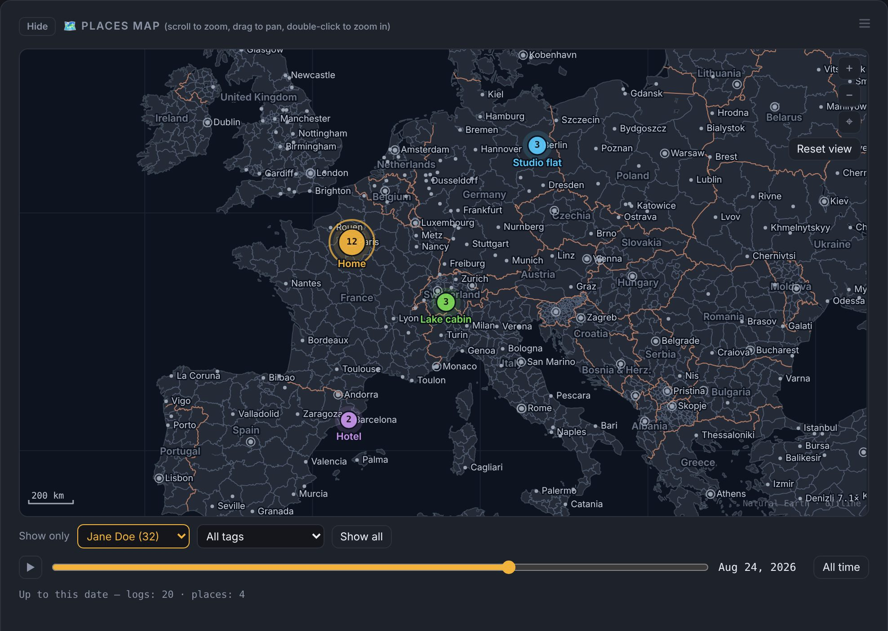
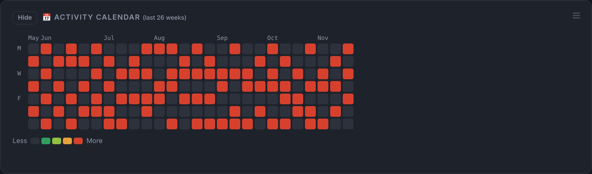
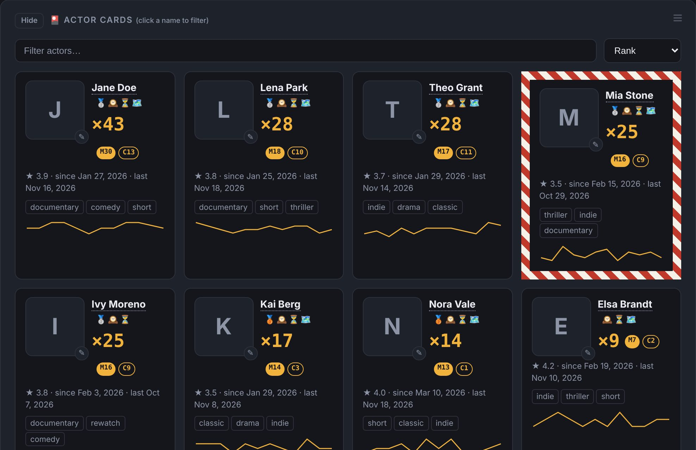
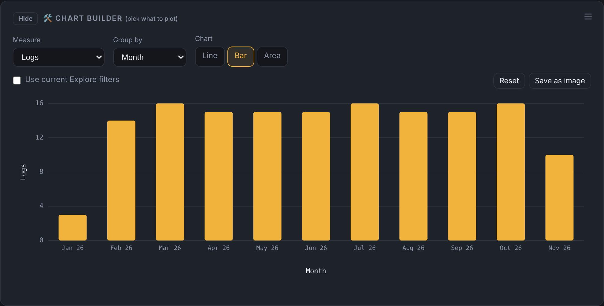

Your log. Your device. Nobody else's.
Actor Tally is a private tally counter for people who watch a lot of video. One click logs who you just watched. Over time, you get a personal analytics dashboard nobody else can see — because, by design, nobody else can.
Brave, Vivaldi and most other Chromium-based browsers install it from the Chrome Web Store. Opera users can already do the same with Opera's “Install Chrome Extensions” add-on while the Opera listing is in review.
Free · No account · No ads · Zero network access — verifiably.
Version 4.2 · Seven languages · Four permissions, no host access.


Not "we don't look." Can't look.
Most apps ask you to trust a privacy policy. Actor Tally doesn't ask you to trust anything — the extension contains no code that can connect to the internet. No server, no account, no analytics. Every entry lives in your browser's local storage on your device, and there is no mechanism by which anyone — including the developer — could read it.
Verifiable, not promised
Anyone technical enough to open the extension's code can confirm there is no network call in it. That's the entire architecture. On Firefox the add-on also declares, in its manifest, that it collects no data.
Locked, if you want it
Set a PIN and your data is properly encrypted at rest (PBKDF2 + AES-256-GCM via your browser's built-in Web Crypto) — not just hidden behind a lock screen. A locked tab holds nothing decrypted in memory at all. Press Esc and the dashboard becomes an ordinary, editable to-do list.
Yours to keep
Full export and import, a 30-day recoverable trash, twenty steps of undo and redo, and a reminder to back up when it's been a while — because your data exists nowhere else. Your history moves to a new computer as a file you carry, not an account someone hosts.
No dark patterns
No guilt-trip streaks, no fake scarcity, no notifications. Because it can't connect to anything, there are no ads and never will be.
Log someone in three seconds
On any video page, click the icon (or press Alt+Shift+A). It reads the page — title, cast links, metadata — and suggests likely names, ranked by confidence.
Tap the right name, or several — tap twice to mark a co-star. Not listed? Start typing and it autocompletes from everyone you've logged before. Rate in half stars, add tags.
One tap logs it, with a running count. You never leave the page. A manual picker handles sites that defeat automatic detection.
A log can carry as much or as little as you like: a star rating (half stars too), tags, who was billed as a co-star, how long you watched (typed, or timed with the built-in stopwatch), a place, and — if you turn it on — how far into the video you were. Watched something on your phone or your TV? Add it by hand from the dashboard; it becomes an ordinary log.
New here? The step-by-step guide walks through every feature with pictures.
New in 4.2
Version 4.0 taught Actor Tally to read your history back. 4.2 makes that history easier to keep tidy — and replays it on the map.
Half-star ratings
Click a star once for the whole value, again for a half, a third time to clear. Every chart, filter and editor understands halves.
Map timeline
A date slider and a play button under the places map replay where your logging happened, day by day. Narrow it to one person or one tag and watch just their history unfold.
Tag clean-up
Rename a tag, delete it, or tick several and merge them into one — across every log in one step, with undo.
Backup reminder
After a number of new logs or days you choose (15 logs or 30 days by default), the dashboard offers an export. Snooze it, adjust it, or switch it off in Settings.
Past tags, your way
Choose how many of your tags the popup suggests — from none to all of them. “None” keeps your tag history out of sight while you log.
Now on Edge
Actor Tally is live on Microsoft Edge Add-ons, with Firefox and Opera in store review. Same extension, same zero-network design, on every browser.
Also: clear every star rating at once, more of the interface translated, and fixes — milestones count logs rather than names and step back when you delete, an open dashboard picks up logs made in the popup instantly, and tags are saved consistently. Full details in the changelog.
See it
Real screenshots, with made-up demo data.




A real analytics dashboard
Everything you log feeds a full dashboard in its own tab:
- Leaderboard of your most-logged people
- Calendar heatmap of your busiest days
- When you log — a weekday × hour heatmap
- Per-day breakdown between any two dates
- By site and month by month — new vs repeat actors
- Time spent — totals, length distribution, monthly trend
- Chart builder — 7 measures × 14 groupings, your question
- Insights — plain-language observations, rotating
- Places map — offline world map with a replayable timeline
- Personal records — biggest day, biggest month, longest gap
- Badges and milestones as your collection grows
- Cards, not rows — each person with count, rating, tags, photo
- Everything clickable — filter by tag, name, site, rating, co-star, place, length or time of day
- Log count as tally marks, exportable as an image
- Monthly goal ring and day streaks
- Compare with a friend — from a file you both choose to share
- Yearly recap — a shareable visual summary of your year
Every number counts a log, not a name: a single scene with three performers is one entry in your day count, your streak and your heatmap — and three appearances only where appearances are what's being counted.
Four logs, one install
Keep separate histories side by side — up to four, each with its own entries, aliases, places, photos and trash. Each page can be renamed, and the word “actor” itself can be replaced throughout the interface with whatever word fits what you're tracking. The popup remembers which page you're logging into; the dashboard switches with one click.
Seven languages, one standard
English · Türkçe · Русский · العربية · Español · Français · 日本語
Arabic ships with a fully mirrored right-to-left layout — not translated text bolted onto a left-to-right design. Actor Tally was built as an international product from day one.
Questions
Is it really free?
Yes — fully free, nothing gated, no trial, no premium tier. If it's useful, there's an optional donation link below. Donating changes nothing about what the tool does.
Which browsers does it run on?
Chrome and Microsoft Edge today, from their official stores. Firefox and Opera listings are in store review. Brave, Vivaldi and most other Chromium-based browsers install it from the Chrome Web Store, and Opera can too, with Opera's “Install Chrome Extensions” add-on.
Where exactly is my data?
In your browser's local extension storage, on your device. Nowhere else. There is no cloud copy — so back it up with Export if it matters to you. The backup reminder will nudge you; you set how often.
What if I forget my PIN?
Your data is encrypted with keys derived from your PIN, on your device. Nobody can recover it — not even the developer. Keep an exported backup somewhere safe.
Does it slow down my browser?
No. It does nothing in the background — it runs only in the moment you click it.
How do I verify the zero-network claim?
Open your browser's extension page, inspect the source, and look for any network call — fetch, XHR, WebSocket, beacon. You won't find one. Or watch the network panel while using it: silence.
How do half stars work?
Click a star once for the whole value, click the same star again to turn it into a half (four becomes three and a half), and a third time to clear. The same works in the dashboard's rating editor and the manual log form; bulk edit accepts typed values like 3.5.
I logged something wrong. Can I fix it?
All of it. Open a log's details and edit its date and time, rating, site, title, link, actors, tags, place, duration or video position. Undo and redo go twenty steps, and deleted logs sit in the trash for 30 days.
Can I rename or merge tags?
Yes — Settings → Tags → Manage. Rename or delete any tag across every log on the page, or tick several and merge them into one. One undo reverses the whole change.
Does the map download anything?
No. The world map is a compressed vector dataset (public-domain Natural Earth) that ships inside the extension and is decoded on your machine. Like everything else here, it works with the network unplugged.
Upgrading from 4.0 — do I lose anything?
No. Your logs, aliases, photos, places and settings carry over as they are; whole-star ratings stay whole. Exporting a backup before any upgrade is still a good habit.
Keep it free, keep it yours
Actor Tally has no ads and no premium tier — on purpose. If it earns a place in your browser, you can support development. The Telegram channel is also where updates are announced — the extension itself will never notify you of anything, because it can't.
Found a bug? The dashboard has a Report a bug button in its footer that opens Telegram, X or the support page of the store you installed from — or write from the support page. Nothing is sent automatically; you write the message yourself.